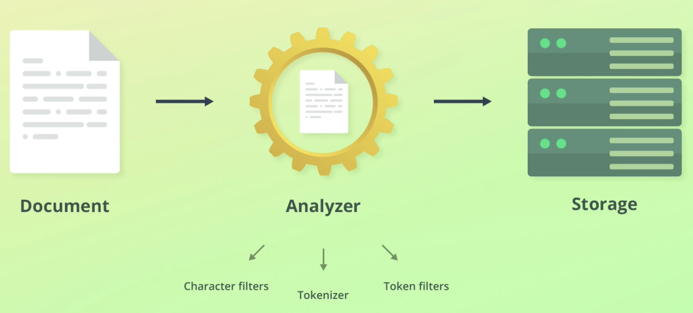
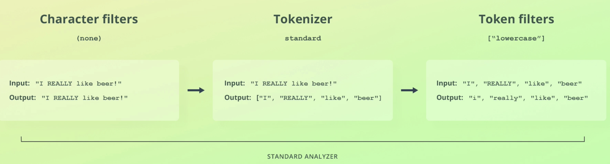
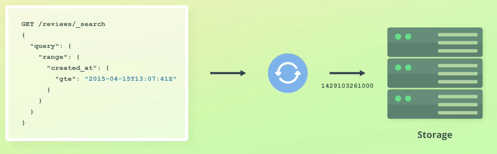
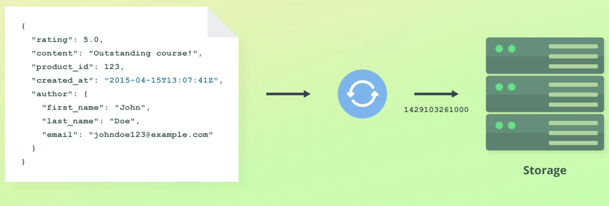
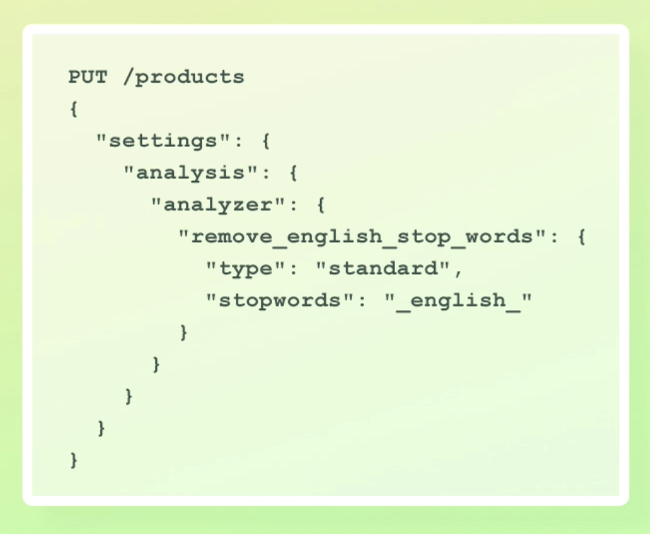

前言 這篇文章是出自於線上課程 Complete Guide to Elasticsearch 的所記錄的筆記。
這一篇文章主要介紹 ElasticSearch 搜尋資料的行為。
本文 當資料被紀錄之前，會先透過分析器 analyzer 來處理。其中 analyzer 分成了三部分
Character filters
Tokenizer
Token filters
Analyzer Character filters
每個 analyzer 都會有零到多個 character filters
用來新增、修改或移除 characters
會因為順序不同而得到不同的結果。
E.g.
Tokenizer 每個 analyzer 都會有一個 tokenizer，作用是幫資料做切分的依據。
E.g.
Token filters 將 tokenizer 所得到的 OUTPUT 當作 INPUT。
用來新增、修改或移除 character
每個 analyzer 可以有零到多個 token filters
會因為順序不同而得到不同的結果
E.g.lowercase filter
關於 analyzer，Elasticsearch 有許多內建的可以使用。
E.g.

透過 API 的方式來 DEMO 上面的情境可以更清楚整個情境
將 standard analyzer 應用下面這個範例
1 2 3 4 5 POST _analyze { "text": "2 guy walk into a bar, but the third... DUCKS!", "analyzer": "standard" }
得到的結果如下，可以很清楚地看到 space 或是 comma 都被當成分割 token 的依據了，不僅如此，原本句子中的 DUCKS 也變成了小寫的 ducks。
1 2 3 4 5 6 7 8 9 10 11 12 13 14 15 16 17 18 19 20 21 22 23 24 25 26 27 28 29 30 31 32 33 34 35 36 37 38 39 40 41 42 43 44 45 46 47 48 49 50 51 52 53 54 55 56 57 58 59 60 61 62 63 64 65 66 67 68 69 70 71 72 73 74 { "tokens" : [ { "token" : "2", "start_offset" : 0, "end_offset" : 1, "type" : "<NUM>", "position" : 0 }, { "token" : "guy", "start_offset" : 2, "end_offset" : 5, "type" : "<ALPHANUM>", "position" : 1 }, { "token" : "walk", "start_offset" : 6, "end_offset" : 10, "type" : "<ALPHANUM>", "position" : 2 }, { "token" : "into", "start_offset" : 11, "end_offset" : 15, "type" : "<ALPHANUM>", "position" : 3 }, { "token" : "a", "start_offset" : 19, "end_offset" : 20, "type" : "<ALPHANUM>", "position" : 4 }, { "token" : "bar", "start_offset" : 21, "end_offset" : 24, "type" : "<ALPHANUM>", "position" : 5 }, { "token" : "but", "start_offset" : 26, "end_offset" : 29, "type" : "<ALPHANUM>", "position" : 6 }, { "token" : "the", "start_offset" : 30, "end_offset" : 33, "type" : "<ALPHANUM>", "position" : 7 }, { "token" : "third", "start_offset" : 34, "end_offset" : 39, "type" : "<ALPHANUM>", "position" : 8 }, { "token" : "ducks", "start_offset" : 44, "end_offset" : 49, "type" : "<ALPHANUM>", "position" : 9 } ] }
如上面所述，我們也可以將 analyzer 分成各自的 char_filter、tokenizer、filter，預期最後得到的結果會跟單獨使用 standardanalyzer 一樣。
1 2 3 4 5 6 7 POST _analyze { "text": "2 guy walk into a bar, but the third... DUCKS!", "char_filter": [], "tokenizer": "standard", "filter": ["lowercase"] }
Explict mapping 我們可以先定義好索引的欄位資料型態要長成什麼樣子
E.g.
新增 1 2 3 4 5 6 7 8 9 10 11 12 13 14 15 16 PUT /reviews { "mappings": { "properties": { "product_id": {"type": "integer"}, "content": {"type": "text"}, "author": { "properties": { "first_name": {"type": "text"}, "last_name": {"type": "text"}, "email": {"type": "keyword"} } } } } }
接著新增一筆資料，這裡先測試給予 email 錯誤的資料型態
1 2 3 4 5 6 7 8 9 10 PUT /reviews/_doc/1 { "product_id": 1, "content": "test content", "author": { "first_name": "chen", "last_name": "percy", "email": {} } }
會得到 400 error
1 2 3 4 5 6 7 8 9 10 11 12 13 14 15 16 17 { "error" : { "root_cause" : [ { "type" : "mapper_parsing_exception", "reason" : "failed to parse field [author.email] of type [keyword] in document with id '1'. Preview of field's value: '{}'" } ], "type" : "mapper_parsing_exception", "reason" : "failed to parse field [author.email] of type [keyword] in document with id '1'. Preview of field's value: '{}'", "caused_by" : { "type" : "illegal_state_exception", "reason" : "Can't get text on a START_OBJECT at 7:14" } }, "status" : 400 }
新增一筆資料型態皆符合的資料
1 2 3 4 5 6 7 8 9 10 PUT /reviews/_doc/1 { "product_id": 1, "content": "test content", "author": { "first_name": "chen", "last_name": "percy", "email": "test@mail.com" } }
可以成功建立
1 2 3 4 5 6 7 8 9 10 11 12 13 14 { "_index" : "reviews", "_type" : "_doc", "_id" : "1", "_version" : 1, "result" : "created", "_shards" : { "total" : 2, "successful" : 2, "failed" : 0 }, "_seq_no" : 0, "_primary_term" : 1 }
有些情況下儘管資料型態不符合，也是能夠成功新增資料，是因為 elasticsearch 的 type coercion 所致
雖然透過 mappings 的方式來形容 object 可行，但如果資料包很多層的話會變得很醜，因此可以改成使用 dot . 的寫法
1 2 3 4 5 6 7 8 9 10 11 12 PUT /reviews_with_dots { "mappings": { "properties": { "product_id": {"type": "integer"}, "content": {"type": "text"}, "author.first_name": {"type": "text"}, "author.last_name": {"type": "text"}, "author.email": {"type": "text"} } } }
取得 GET /reviews/_mappings
E.g.
1 2 3 4 5 6 7 8 9 10 11 12 13 14 15 16 17 18 19 20 21 22 23 24 25 26 27 { "reviews" : { "mappings" : { "properties" : { "author" : { "properties" : { "email" : { "type" : "float" }, "first_name" : { "type" : "text" }, "last_name" : { "type" : "text" } } }, "content" : { "type" : "text" }, "product_id" : { "type" : "integer" } } } } }
取得特定欄位的 data typeGET /reviews/_mapping/field/<field_name>
E.g.
1 GET /reviews/_mapping/field/product_id
1 2 3 4 5 6 7 8 9 10 11 12 13 14 { "reviews" : { "mappings" : { "product_id" : { "full_name" : "product_id", "mapping" : { "product_id" : { "type" : "integer" } } } } } }
如果欄位是 object，可以使用 dot . 來表示
1 GET /reviews/_mapping/field/author.last_name
1 2 3 4 5 6 7 8 9 10 11 12 13 14 { "reviews" : { "mappings" : { "author.last_name" : { "full_name" : "author.last_name", "mapping" : { "last_name" : { "type" : "text" } } } } } }
修改 PUT /<index>/_mapping {json...}
E.g.
1 2 3 4 5 6 7 8 PUT /reviews/_mapping { "properties":{ "created_at": { "type": "date" } } }
接著再次取得 index 的 mapping 便能夠看到剛新增上去的 create_at
1 2 3 4 5 6 7 8 9 10 11 12 13 14 15 16 17 18 19 20 21 22 23 24 25 26 27 28 29 30 { "reviews" : { "mappings" : { "properties" : { "author" : { "properties" : { "email" : { "type" : "float" }, "first_name" : { "type" : "text" }, "last_name" : { "type" : "text" } } }, "content" : { "type" : "text" }, "created" : { "type" : "date" }, "product_id" : { "type" : "integer" } } } } }
修改欄位 索引的欄位基本上無法修改，除非是加上 ignore_above。
E.g.
1 2 3 4 5 6 7 8 9 10 11 { "reviews" : { "mappings" : { "properties" : { "email" : { "type" : "keyword" } } } } }
將 email 加上 ignore_above
1 2 3 4 5 6 7 8 9 PUT /reviews/_mapping { "properties":{ "email": { "type": "keyword", "ignore_above": 256 } } }
type 也要提供，否則會發生 No type specified… 的錯誤
重新索引 Reindex 1 2 3 4 5 6 7 8 9 POST /_reindex { "source": { "index": "src_index" }, "dest": { "index": "dest_index" } }
如果不指定目標索引的資料型態，原本的資料型態會被忽視，會導致來源及目標的索引不同。
別名 alias 使用 alias 的方式達到修改欄位的目的
1 2 3 4 5 6 7 8 9 PUT /<index>/_mapping { "properties":{ "<alias_dest_name>": { "type": "alias", "path": "<alias_src_name>" } } }
multi-feilds mapping 讓同一個欄位達到擁有多種型態的方式
index template 事先定義好 index 的範本，讓之後建立的 index 使用這個事先定義好的範本。
E.g.
1 2 3 4 5 6 7 8 9 10 11 12 13 14 PUT /_template/access-logs { "index_patterns": ["access-logs-*"], "settings": { "number_of_shards": 1 }, "mappings": { "properties": { "content": { "type": "text" } } } }
所有符合開頭是 access-log 的 index 都會使用上面定義的 mapping template。
接著，新增兩個開頭是 access-log 的 index
1 2 3 PUT access-logs-1 PUT access-logs-2
然後取得它們的 mapping，可以發現與 template 一致。
1 2 3 4 5 6 7 8 9 10 11 12 { "access-logs-1" : { "mappings" : { "properties" : { "content" : { "type" : "text" } } } } }
如果 index template 與建立 index 都有 settings 的設定時，兩者會合併
I.e.
加上 order 參數，可以來決定 template 的優先權，數值越低，優先權越高
Index template 也可以被修改，但修改之前的 index mapping 會保持原樣
Other parameters 這個段若要來介紹一些常用的 parameters
為 date 指定特定的 format
E.g.
dd/MM/yyyy
epoch_second
E.g.
1 2 3 4 5 6 7 8 9 10 11 PUT /sales { "mappings": { "properties": { "purchased_at": { "type": "date", "format": "<format>" } } } }
properties 用來表示 object
E.g.
1 2 3 4 5 6 7 8 9 10 11 12 13 PUT /reviews { "mappings": { "properties": { "product_id": {"type": "integer"}, "author": { "properties": { "email": {"type": "keyword"} } } } } }
實際上 ES 並沒有 object，而是使用 properties 來代替 object 的概念
coerce 用來決定是否啟用 coercion (預設是啟用)，若沒有針對欄位指定，則預設使用 index 本身的設定
E.g.
對特定的欄位進行設定
1 2 3 4 5 6 7 8 9 10 11 PUT /sales { "mappings": { "properties": { "amount": { "type": "float", "coerce": false } } } }
對整個 index 設定
1 2 3 4 5 6 7 8 9 10 11 12 13 14 PUT /sales { "settings": { "index.mapping.coerce": false }, "mappings": { "properties": { "amount": { "type": "float", "coerce": true } } } }
doc_values 是 ES 的另一種資料結構，擅長使用在
sorting
aggregations
scripting
會根據未來的需求來決定是否停用 dot_values。對於資料量龐大的索引所帶來的效益較高，如果資料量不大，帶來的效益就不顯著。若需要更改 dot_values，必須要 reindex。
停用 dot_values 的時機
節省硬碟空間
提升資料索引的速度
E.g.
1 2 3 4 5 6 7 8 9 10 11 PUT /sales { "mappings": { "properties": { "buyer_mail": { "type": "keyword", "doc_values": false } } } }
norms 用來計算每一個搜尋結果的分數，若是想要節省空間，可以停用這個功能。
E.g.
1 2 3 4 5 6 7 8 9 10 11 PUT /products { "mappings": { "properties": { "tags": { "type": "text", "norms": false } } } }
index 如果欄位資料沒有搜尋的需求，可以停用 index
E.g.
1 2 3 4 5 6 7 8 9 10 11 PUT /server-metrics { "mappings": { "properties": { "server_id": { "type": "integer", "index": false } } } }
null_value null 無法被索引 或是搜尋 ，使用這個參數讓 NULL 轉換成特定的值，以便用來搜尋
E.g.
1 2 3 4 5 6 7 8 9 10 11 PUT /sales { "mappings": { "properties": { "server_id": { "type": "keyword", "null_value": "NULL" } } } }
實際上儲存資料只會更改索引儲存的方式，不會修改 _source 的內容
i.e.
1 2 3 4 PUT /sales/_doc/1 { "server_id": null }
接著，以 server_id 為 NULL 的方式搜尋這筆資料
1 2 3 4 5 6 7 8 GET sales/_search { "query": { "term": { "server_id": "NULL" } } }
確定可以拿到這筆資料
1 2 3 4 5 6 7 8 9 10 11 12 13 14 15 16 17 18 19 20 21 22 23 24 25 26 27 28 { "took" : 1, "timed_out" : false, "_shards" : { "total" : 1, "successful" : 1, "skipped" : 0, "failed" : 0 }, "hits" : { "total" : { "value" : 1, "relation" : "eq" }, "max_score" : 0.2876821, "hits" : [ { "_index" : "sales", "_type" : "_doc", "_id" : "1", "_score" : 0.2876821, "_source" : { "server_id" : null } } ] } }
copy_to 將各個單一的欄位組成一個新的欄位，新組成的欄位並不會紀錄在 _source。
E.g.
1 2 3 4 5 6 7 8 9 10 11 12 13 14 15 16 17 18 PUT /sales { "mappings": { "properties": { "first_name": { "type": "text", "copy_to": "full_name" }, "last_name": { "type": "text", "copy_to": "full_name" }, "full_name": { "type": "text" } } } }
使用 explict mappings 是為了
節省空間
適合用在正式產品的環境
反之，dynamic mapping 適合用在開發上。
同一個欄位可以賦予多個 mapping，這個行為稱作 multi-fields
1 2 3 4 5 6 7 8 9 10 11 12 13 14 15 PUT sample-index { "mappings": { "properties": { "city": { "type": "text", "fields": { "raw": { "type": "keyword" } } } } } }
但非必要不這麼做，因為這需要額外的儲存空間
節省空間的其他方法
確認此欄位的搜尋模式
full-text: text
aggergation, sorting, filtering: keyword
使用更精確的型態，可以節省空間
可以使用 float，就不使用 double
可以使用 integer，就不使用 long
透過設定參數來降低空間使用
doc_values 設為 false: 停用 sorting, aggregations 及 scripting
norms 設為 false: 停用 relevance scoring
index 設為 false: 停用 filter values
Dates Elasticsearch 在處理時間資料會遵循著以下的規範
Date 時區會轉換為 UTC
任何格式的 date 在內部皆會轉成 long data type 的方式儲存起來
搜尋的條件中若是包含日期，也會自動轉換成 long 的方式查詢
E.g.
1 2 3 4 5 6 7 8 9 10 11 12 13 14 15 16 17 18 19 20 21 22 23 24 25 26 27 28 29 30 31 32 33 34 35 36 37 38 39 40 41 42 43 44 45 46 47 PUT /reviews/_doc/2 { "product_id": 1, "created_at": "2016-12-18", "content": "test content", "author": { "email": "test@mail.com", "first_name": "Percy", "last_name": "Chen" } } PUT /reviews/_doc/3 { "product_id": 12, "created_at": "2016-12-18T13:07:01Z", "content": "test content", "author": { "email": "test2@mail.com", "first_name": "John", "last_name": "Mi" } } PUT /reviews/_doc/4 { "product_id": 12, "created_at": "2016-12-18T13:07:01+04:00", "content": "test content", "author": { "email": "test3@mail.com", "first_name": "Fig", "last_name": "Th" } } PUT /reviews/_doc/5 { "product_id": 12, "created_at": 1638438115, "content": "this is a epoch", "author": { "email": "test3@mail.com", "first_name": "Epoch", "last_name": "Is" } }
查詢目前在 reviews index 的所有紀錄
1 2 3 4 5 6 GET /reviews/_search { "query": { "match_all": {} } }
1 2 3 4 5 6 7 8 9 10 11 12 13 14 15 16 17 18 19 20 21 22 23 24 25 26 27 28 29 30 31 32 33 34 35 36 37 38 39 40 41 42 43 44 45 46 47 48 49 50 51 52 53 54 55 56 57 58 59 60 61 62 63 64 65 66 67 68 69 70 71 72 73 74 75 76 77 78 79 80 81 82 83 { "took" : 613, "timed_out" : false, "_shards" : { "total" : 1, "successful" : 1, "skipped" : 0, "failed" : 0 }, "hits" : { "total" : { "value" : 4, "relation" : "eq" }, "max_score" : 1.0, "hits" : [ { "_index" : "reviews", "_type" : "_doc", "_id" : "2", "_score" : 1.0, "_source" : { "product_id" : 1, "created_at" : "2016-12-18", "content" : "test content", "author" : { "email" : "test@mail.com", "first_name" : "Percy", "last_name" : "Chen" } } }, { "_index" : "reviews", "_type" : "_doc", "_id" : "3", "_score" : 1.0, "_source" : { "product_id" : 12, "created_at" : "2016-12-18T13:07:01Z", "content" : "test content", "author" : { "email" : "test2@mail.com", "first_name" : "John", "last_name" : "Mi" } } }, { "_index" : "reviews", "_type" : "_doc", "_id" : "4", "_score" : 1.0, "_source" : { "product_id" : 12, "created_at" : "2016-12-18T13:07:01+04:00", "content" : "test content", "author" : { "email" : "test3@mail.com", "first_name" : "Fig", "last_name" : "Th" } } }, { "_index" : "reviews", "_type" : "_doc", "_id" : "5", "_score" : 1.0, "_source" : { "product_id" : 12, "created_at" : 1638438115, "content" : "this is a epoch", "author" : { "email" : "test3@mail.com", "first_name" : "Epoch", "last_name" : "Is" } } } ] } }
儘管時間在內部是使用 epcoch 的方式儲存起來，資料在回傳的時候依然會遵循著資料儲存的格式。
雖然我們上面新增了 created_at 的欄位，但並不代表著它是必填的選項，對於 ES 而言，每個欄位可以是零個或是多個。因此，這時候我們新增一筆沒有 created_at 的資料，其實也是可以的!
1 2 3 4 5 6 7 8 9 10 PUT /reviews/_doc/6 { "product_id": 12, "content": "this is a epoch", "author": { "email": "test3@mail.com", "first_name": "Epoch", "last_name": "Is" } }
1 2 3 4 5 6 7 8 9 10 11 12 13 14 15 { "_index" : "reviews", "_type" : "_doc", "_id" : "7", "_version" : 1, "result" : "created", "_shards" : { "total" : 2, "successful" : 2, "failed" : 0 }, "_seq_no" : 8, "_primary_term" : 1 }
Stemming word & Stop word 資料被記錄的型態可能是轉變的
loved (過去式)
drinking (現在進行式)
如果是以原型字去搜尋，是無法成功搜尋到資料的
Stemming 是將變形的字轉為原本的型態，以便搜尋時可以透過原型字下去尋找
E.g.
loved -> love
drinking -> drink
如果用 loved 去搜尋被儲存為 love 的資料，是能夠成功搜尋的! 因為在搜尋的過程中，搜尋內容也會被 analyze!
Stop word 資料在分析時，會把無法幫助判別的的特定字過濾掉
E.g.
但 ES 的演算法持續有在進步，因此 stop word 在現今比較少用到，也沒有被放在 default analyzer 裡。
Analyzer Standard analyzer 由下列三點所組成
Standard Tokenizer
Lower Case Token Filter
Stop Token Filter (disabled by default)
E.g.
Simple analyzer 與 Standard analyzer 類似，但不是使用 lowercase token filter 而是 lowercase tokenizer。
Lowercase tokenizer 與 letter tokenizer 相似，皆是以字元當作依據來切分字句，但前者還會將字元小寫。
E.g.
Whitespace analyzer 根據 空白 將字句切分
E.g.
有注意到 whitespace analyzer 並沒有將字句小寫嗎 ?
Keyword analyzer 是一個 No-op 的 analyzer，將一個字句直接輸出。
E.g.
Pattern analyzer 是一個使用 Regex 的 analyzer，預設使用 \W+ 當作分割的依據，也會將字句轉為小寫(可以關閉此功能)。
E.g.
Other analyzers 更多資訊可以透過官網 的資料查詢
Custom analyzer 可以結合內建的 analyzer 來組成一個自定義的 analyzer。
E.g.
Standard analyzer 結合 stopword
Standard 結合排除HTML tag
1 2 3 4 5 6 7 8 9 10 11 12 13 14 15 16 17 18 19 PUT /analyzer_test { "settings": { "analysis": { "analyzer": { "my_custom_analyzer": { "type": "custom", "char_filter": ["html_strip"], "tokenizer": "standard", "filter": [ "lowercase", "stop", "asciifolding" ] } } } } }
測試自定義的 analyzer
1 2 3 4 5 POST /analyzer_test/_analyze { "analyzer": "my_custom_analyzer", "text": "César! I' m in a <em>bad</em> mood." }
1 2 3 4 5 6 7 8 9 10 11 12 13 14 15 16 17 18 19 20 21 22 23 24 25 26 27 28 29 30 31 32 33 34 35 36 37 38 39 { "tokens" : [ { "token" : "cesar", "start_offset" : 0, "end_offset" : 5, "type" : "<ALPHANUM>", "position" : 0 }, { "token" : "i", "start_offset" : 7, "end_offset" : 8, "type" : "<ALPHANUM>", "position" : 1 }, { "token" : "m", "start_offset" : 15, "end_offset" : 16, "type" : "<ALPHANUM>", "position" : 2 }, { "token" : "bad", "start_offset" : 26, "end_offset" : 34, "type" : "<ALPHANUM>", "position" : 5 }, { "token" : "mood", "start_offset" : 35, "end_offset" : 39, "type" : "<ALPHANUM>", "position" : 6 } ] }
新增 analyzer 到特定 index E.g.
1 2 3 4 5 6 7 8 9 10 11 12 13 14 15 16 17 18 19 PUT /analyzer_test/_settings { "settings": { "analysis": { "analyzer": { "my_second_analyzer": { "type": "custom", "char_filter": ["html_strip"], "tokenizer": "standard", "filter": [ "lowercase", "stop", "asciifolding" ] } } } } }
會得到錯誤
1 2 3 4 5 6 7 8 9 10 11 12 13 { "error" : { "root_cause" : [ { "type" : "illegal_argument_exception", "reason" : "Can't update non dynamic settings [[index.analysis.analyzer.my_second_analyzer.tokenizer, index.analysis.analyzer.my_second_analyzer.type, index.analysis.analyzer.my_second_analyzer.char_filter, index.analysis.analyzer.my_second_analyzer.filter]] for open indices [[analyzer_test/DnZTsXHbRe2YxVTFDUYH0A]]" } ], "type" : "illegal_argument_exception", "reason" : "Can't update non dynamic settings [[index.analysis.analyzer.my_second_analyzer.tokenizer, index.analysis.analyzer.my_second_analyzer.type, index.analysis.analyzer.my_second_analyzer.char_filter, index.analysis.analyzer.my_second_analyzer.filter]] for open indices [[analyzer_test/DnZTsXHbRe2YxVTFDUYH0A]]" }, "status" : 400 }
是因為 index 分成了
open
close -> 不允許 Read/Write
也可以分成
Dynamic -> 不需要關閉 index 便可以更動 index (也就是說 index 沒有 downtime)
Static -> 需要關閉 index 才能進行更動
新增、關閉 index 的方法相當簡單POST /<index>/_openPOST /<index>/_close
關閉 index 之後，便可以成功新增 analyzer 到 index 上。
查看新增完畢的 index
GET /analyzer_test/_settings
可以看到 my_custom_analyzer 及 my_second_analyzer
1 2 3 4 5 6 7 8 9 10 11 12 13 14 15 16 17 18 19 20 21 22 23 24 25 26 27 28 29 30 31 32 33 34 35 36 37 38 39 40 41 42 43 44 45 46 47 48 49 50 51 52 53 { "analyzer_test" : { "settings" : { "index" : { "routing" : { "allocation" : { "include" : { "_tier_preference" : "data_content" } } }, "verified_before_close" : "true", "number_of_shards" : "1", "provided_name" : "analyzer_test", "creation_date" : "1640240870463", "analysis" : { "analyzer" : { "my_second_analyzer" : { "filter" : [ "lowercase", "stop", "asciifolding" ], "char_filter" : [ "html_strip" ], "type" : "custom", "tokenizer" : "standard" }, "my_custom_analyzer" : { "filter" : [ "lowercase", "stop", "asciifolding" ], "char_filter" : [ "html_strip" ], "type" : "custom", "tokenizer" : "standard" } } }, "number_of_replicas" : "1", "uuid" : "DnZTsXHbRe2YxVTFDUYH0A", "version" : { "created" : "7160299" } } } } }
Reference
Complete Guide to Elasticsearch